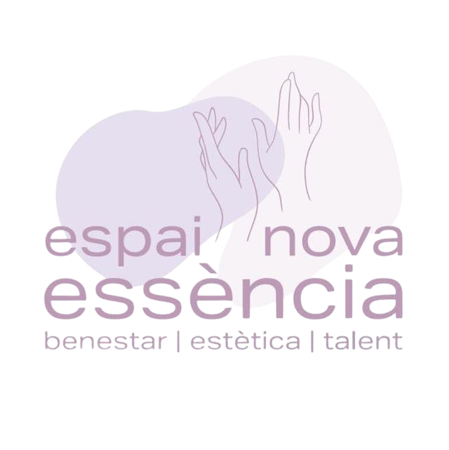
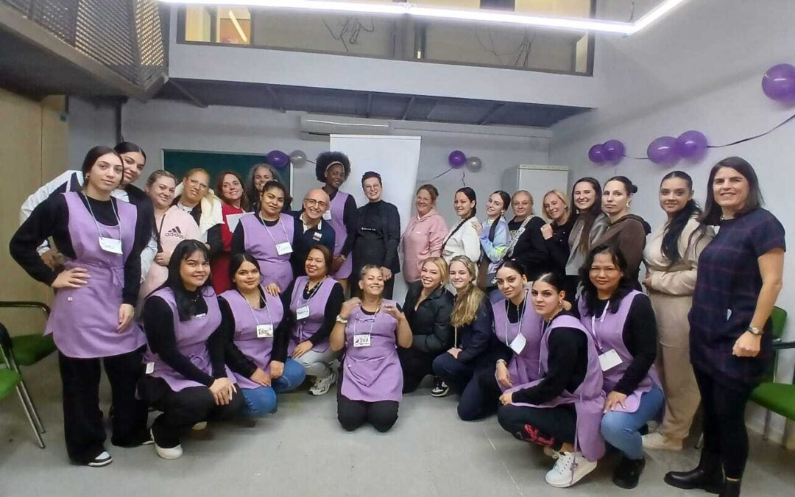
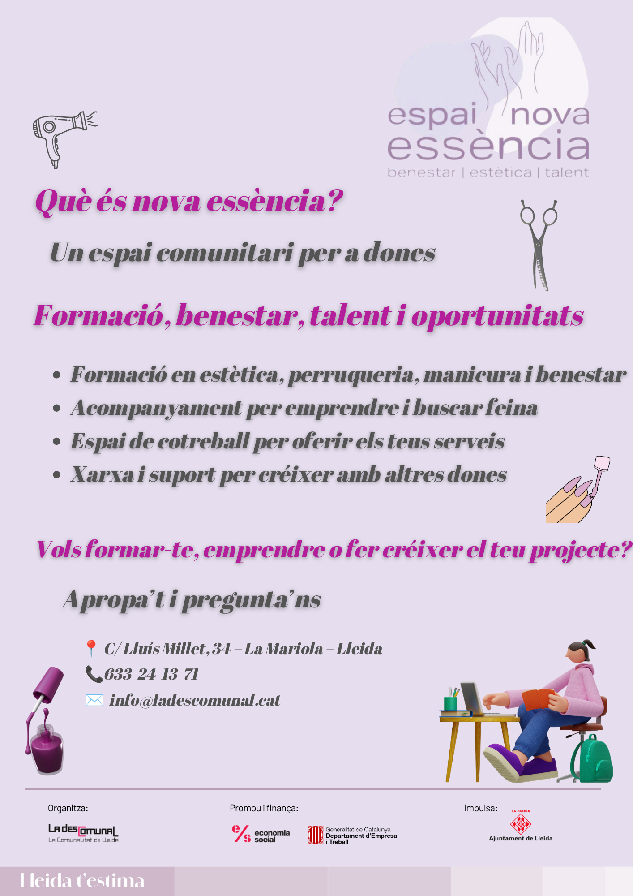
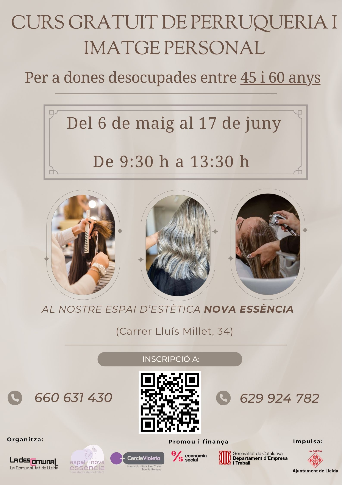
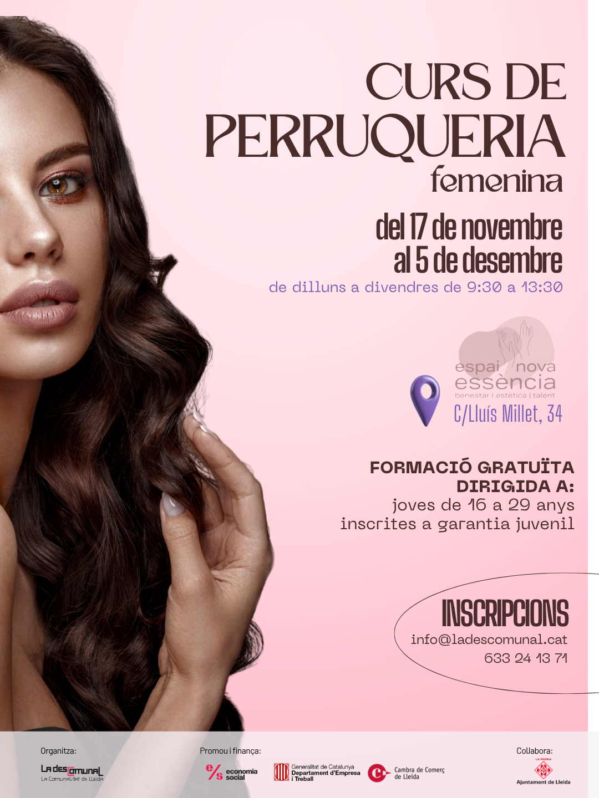

Formació tècnica
Aprenentatges pràctics que reforcen capacitats i obren noves oportunitats professionals.
Projecte destacat · La Mariola
Un espai comunitari de dones per a la formació, el cotreball, l'empoderament i la inserció sociolaboral.


Nova Essència neix del treball de base i del procés participatiu que impulsem a la Zona 09, juntament amb les dones de la Mariola, el Turó de Gardeny i els Blocs Joan Carles.
És un espai de formació, cotreball i cooperació que promou l'autonomia econòmica i l'empoderament de les dones a través de la formació i la creació col·lectiva de projectes.
Les primeres activitats, com els cursos de manicura i perruqueria, han servit per validar el model comunitari i enfortir un grup motor de dones compromeses amb la transformació social del seu entorn.
02 · Tot en un mateix espai
Nova Essència acompanya les dones per formar-se, buscar feina, emprendre i oferir els seus serveis en un entorn compartit.

Connectem emprenedoria, cures i participació per construir oportunitats arrelades al territori.
Aprenentatges pràctics que reforcen capacitats i obren noves oportunitats professionals.
Suport personalitzat perquè cada dona pugui avançar en el seu propi procés d'autonomia.
Un espai compartit per crear vincles, projectes col·lectius i lideratges comunitaris.
04 · Activitats
Una mostra d'activitats ja impulsades per reforçar capacitats, autonomia i xarxa entre dones de diferents edats.


05 · En xarxa
Nova Essència articula la implicació de les dones del barri, entitats locals, serveis municipals i la xarxa Enter per a la inserció sociolaboral.
Des de La Descomunal continuem acompanyant aquest procés perquè l'espai segueixi creixent com un lloc de trobada, formació i futur compartit per a les dones de la Mariola i de tota la ciutat.
Projectes que transformen la Zona 09